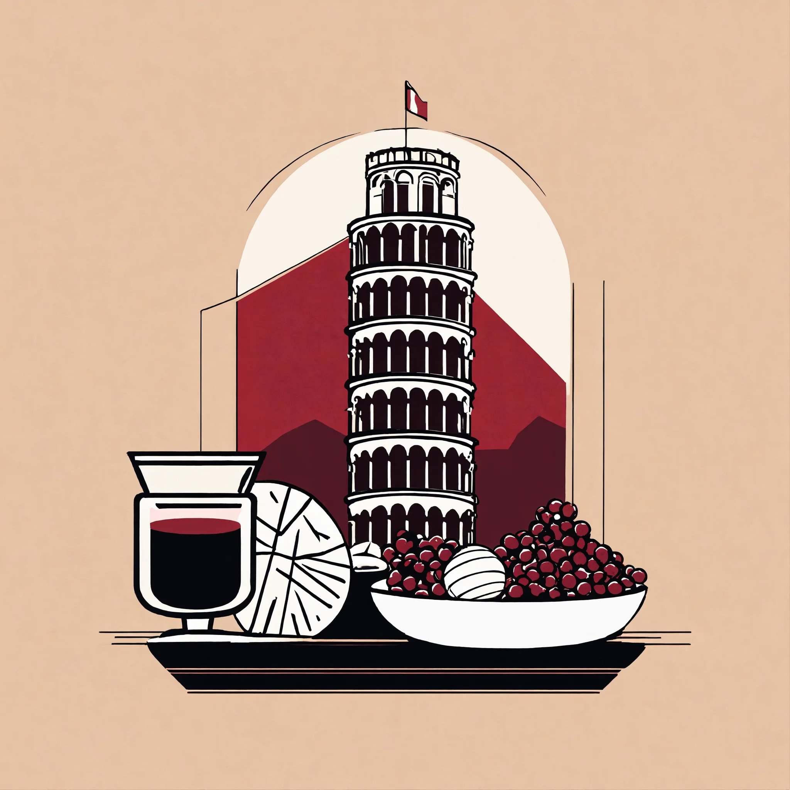

Bookmarks
A collection of links to various pieces of content to learn the language
Dutch

- woordenlijst : look for the proper spelling and forms/ conjugation of a word
- nporadio1 : listen to radio in Dutch
- schooltv : watch small videos with subtitles and transcription
- taaladvies : provides answers to common questions about language and spelling
- the dutch online academy : you can listen to a learning tailored podcast with the transcript, so you can read what it's being said, they also have on the site some PDFs with grammar and other material.
- taaldrop : get a mail everyday with a dutch text, find the error and see the answer with the explanation
German

- ZDF : watch films and documentaries in German
- Deutsche Welle : a newspaper that have a section to help you learn and they tailor it according to your level, you may also want to check the journals or other videos in German to help you practice and improve
- DWDS : a really good online dictionary with the vocabulary from 1600 until today, the may even show you extra info like frequency, where it is more used and other things.
French

- Le point du fle :It provides lesson plans and activities to practice what you've learned
- Le Monde diplomatique : An example of a newspaper where you can read articles and for some of them listen to them too, you may find also magazine, blogs and other content
- Reddit Learn French : A community where learners share tools and resources
Italian

- RAI : news, entertainment, sports and culture website in Italian
- Cucinare : why not watching videos of a topic you are interested in, and everyone loves italian food!